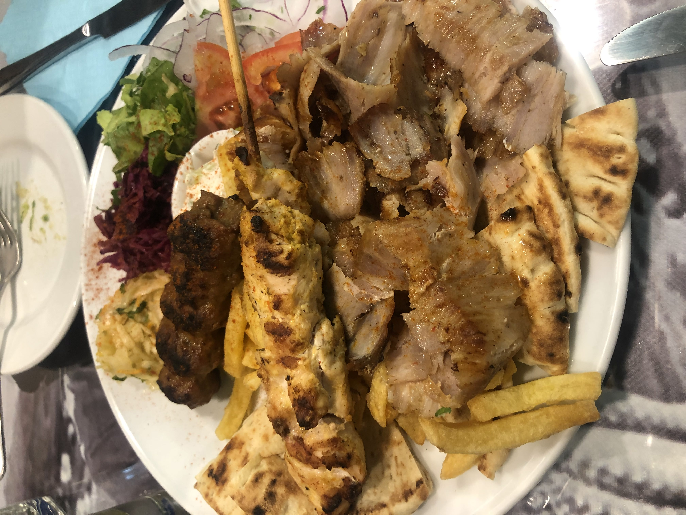
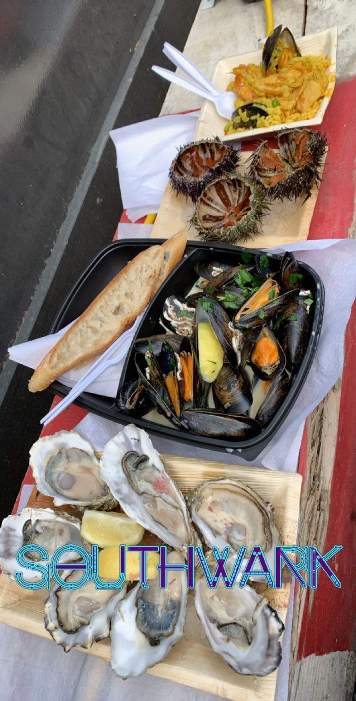
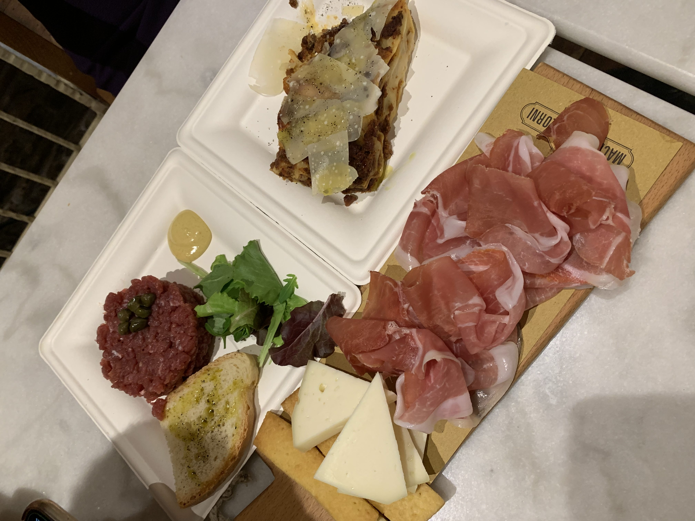

Gyros
As a carbohydrate addict, I've found that Europe has been my paradise with everything pasta, pizza, and pita related. In Greece, I've gotten to eat the best gyros I've ever had the privilege of biting into. Full of juicy, tender lamb or chicken meats, and stuffed or topped with carmelized onions and peppers, these are to die for.
Tea
I never thought I'd get to the chance to be a posh Englishwoman, but this was my chance! I had High Tea in London at this super fancy place called "Sketch", which is known for its ultra-pink themed restaurant. I felt like I was in a Barbie and Alice in Wonderland crossover as I nibbled on their tiny sandwhich delicacies and exotic, fancy teas. Each bite was full of interesting flavor profiles, with smears of caviar on the side! I also got to try an assortment of over 12 curated teas.

Borough Market
Borough Market is one of the largest and oldest food markets in London, with a market on the site dating back to at least the 12th century. I nearly got lost wandering around the busy stalls and fishermen and bakers hawking their fresh offerings, but we managed to try as many stalls as possible, starting off with paella and a seafood assortment of oysters, steamed mussels, and sea urchins!
Meats
The Italian countryside is famed for its wines and of course, its meats! I got to try its famed prosciutto and beef tartare. As someone who is not accustomed to eating raw meats, I was hesitatnt to try it first. But after my first bite, I was hooked. They have a special, natural way of raising their animals and curing their meats that brings out a particular flavor profile that I've never experienced before.
